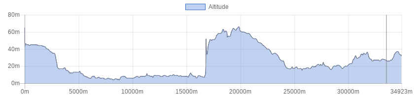

<!doctype html>
<html class="no-js" lang="en" dir="ltr">
  <head>
    <meta charset="utf-8">
    <meta http-equiv="x-ua-compatible" content="ie=edge">
    <meta name="viewport" content="width=device-width, initial-scale=1.0">
    <title>Foundation for Sites</title>
    <link rel="stylesheet" href="css/foundation.css">
    <link rel="stylesheet" href="css/app.css">
  </head>
  <style type="text/css">
  
  
h1.blu {
background-color: #2f5a55;
color: white;
font-size: 1.75rem; 
}

h1.verde {
background-color: #008e80;
color: white;
font-size: 1rem; 
}


h1.bianco {
background-color: white;
color: #506487;
font-size: 1rem; 
}

button.radius, .button.radius {
    border-radius: 3px; font-size:12px;
    }
  button.round, .button.round {
    border-radius: 1000px; font-size:1.2em; background-color:#3fa537}

</style>
  <body>
    <div class="grid-container">
      <div class="grid-x grid-padding-x">
        <div class="large-12 cell">
          <h1 class="verde">&nbsp;</h1>
        </div>
      </div>
      
       <div class="grid-x grid-padding-x">
        <div class="large-12 cell">
        <table>
        <tr>
        <td></td>
        <td><b>Discovering the beauty of the marshland of Fucecchio
</b></td>
        </tr>
        </table>
        
        </div>
      </div>
      
      <div class="grid-x grid-padding-x">
        <div class="large-12 cell">
          <h1 class="verde">&nbsp;</h1>
        </div>	
      </div>
      
      <!------ inizio tabella --->
       <div class="grid-x grid-padding-x">
        <div class="large-12 cell">
        <table>
        
         <tr>
        <td><b>Difficulty level</B></td>
        <td></td>
        </tr>
        
        <tr>
        <td><b>Lenght</B></td>
        <td>34 Km</td>
        </tr>
        
        <tr>
        <td><b>Gap</B></td>
        <td>170 + / 170 -</td>
        </tr>

        <tr>
        <td><b>Season</B></td>
        <td>All year</td>
        </tr>

        <tr>
        <td><b>Ground</B></td>
        <td>Gravel road, paved road</td>
        </tr>
        
        <tr>
        <td><b>Description</B></td>
        <td>stile roadbook</td>
        </tr>
        
        
        <tr>
        <td><b>Info on track</B></td>
        <td>
       Departure from the Park in Montecatini Terme. The itinerary goes along secondary roads until taking a white road which leads directly to the marshland. From here the route twists and turns along white roads and narrow paths along the canals. This area once marshy then reclaimed is full of migratory birds that can be easily admired. We may observe egrets, herons, coots and similar.
Throughout the year it is possible to enjoy unique sunsets and for this reason the itinerary is absolutely great for those who like naturalistic  photography
The tour then continues towards the Crocialoni lake, which we run along through a nice shady path, stopping every once in a while to have refreshments and take pictures.
Whenever you feel like going back home, just ride your bike along the same route.

        </td>
        </tr>

       
       <tr>
        <td><b>Lodging</B></td>
        <td><a href="http://www.bikeexperience.tuscany.it/montecatini-bike-hotels/">Link</a></td>
        </tr>
        
        
        <tr>
        <td><b>Eating</B></td>
        <td>
        Al Ristoro<br>
Via Capannone, 89<br>
51019 Ponte Buggianese – Località Anchione<br>
Phone: <a href="tel:0572634001">0572 634001</a><br>
Mobile: <a href="tel:3337196339">333 7196339</a><br>
<a href="http://www.ristorantealristoro.it/">Website</a>

        
</td>
        </tr>
        
        <tr>
        <td><b>Starting point</B></td>
        <td>
        
      By car or public transport
</td>
        </tr>
        
        </table>
        
        </div>
      </div>
      <div class="responsive-embed" style="width:75%; margin-left:auto; margin-right:auto;">
                <iframe  src="./sentieri/monte_padule.html" frameborder="0" allowfullscreen></iframe>
        </div>
    
   <div class="grid-x grid-padding-x">
        <div class="large-12 cell"><center>
          </center>
        </div>
      </div>
  
  
  <div class="grid-x grid-padding-x">
        <div class="large-12 cell"><center>
        <a href="mtb.html" class="button   round">Back</a><center>
        </div>
      </div>
    </div>

    <script src="js/vendor/jquery.js"></script>
    <script src="js/vendor/what-input.js"></script>
    <script src="js/vendor/foundation.js"></script>
    <script src="js/app.js"></script>
  </body>
</html>
